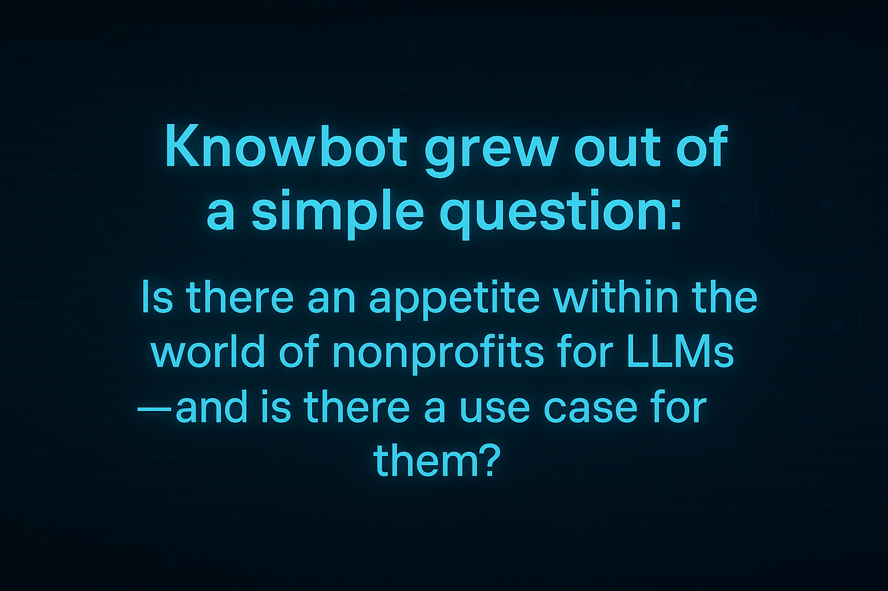
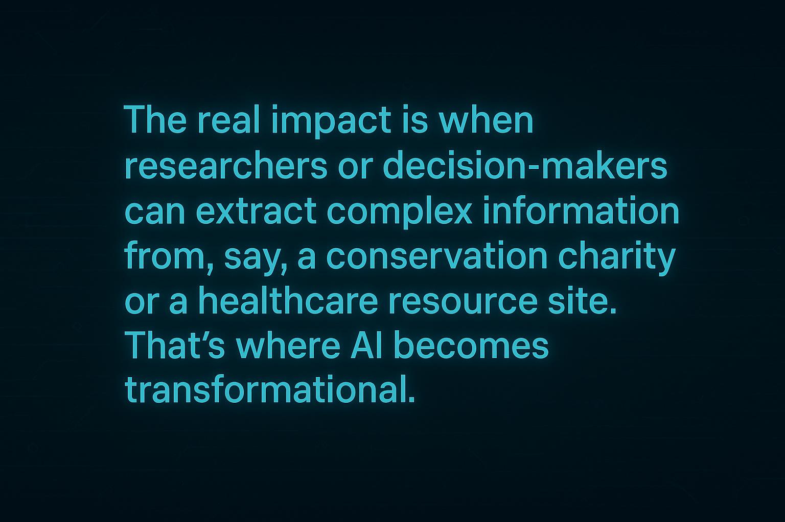

Since the emergence of generative AI such as OpenAI’s ChatGPT at the end of 2022, data science practitioners have watched large language models (LLMs) become both a transformative capability and a source of organisational anxiety. Few people sit closer to this intersection than Mike Hudson, a former fintech entrepreneur who now leads initiatives deploying AI for social good through the Mike Hudson Foundation. MHF’s current projects include Knowbot, an LLM-powered tool designed to make complex websites more accessible. Knowbot uses LLMs to read and distill curated information to answer users’ complex questions.
Previously, MHF created TestRAMP, an ambitious effort during the COVID-19 pandemic to mobilise private lab PCR capacity for public benefit which also identified potential lessons for future crisis situations.
In this interview, Mike speaks candidly about the challenges and opportunities of deploying AI in nonprofit settings, and the lessons learned from building responsible, high-impact technology during moments of rapid change.

The Appetite for AI in the Third Sector
Q: What led you to start working on Knowbot in the first place?
I used to be a business entrepreneur with several tech and fintech businesses. That came to an end when I sold those businesses and then, when Covid started, it seemed like there was an opportunity to give something back. I founded TestRAMP, my first nonprofit, and that experience was so enjoyable and so productive. Once the pandemic eased, we had a foundation in place but no clear mission. Then ChatGPT launched, the world got excited about large language models, and we thought: could we use our tech backgrounds and some funding to build something for the social good?
Knowbot grew out of a simple question: Is there an appetite within the world of nonprofits for LLMs —and is there a use case for them? We needed a very simple, low-risk, easy-to-grasp AI use case that could act as a gateway for organisations cautiously exploring LLMs. Knowbot became that gateway.
We pushed it out to some of the non-profits we were already working with and it’s been interesting. There is some appetite for it, and the appetite is increasing. We use Knowbot as a jumping-off point to start a conversation about AI.
Q: Are there patterns in which charities are more open to adopting AI?
The biggest differentiator isn’t size or budget — it’s culture. We are finding it most productive to work with medium-to-large nonprofits with a scientific or research-oriented culture, where the internal decision-makers tend to “get” AI more quickly. Because our single biggest challenge, far and away above any technical or scaling challenges, or anything to do with IT or LLM, has been accessing the right decision-makers inside organisations.
The sector is understandably cautious and we are new kids on the block — Knowbot didn’t exist a year ago. And we have realised that word of mouth recommendations will be key to our growth: credibility has to be built one relationship at a time with the right nonprofit partners.
Designing for Maximum Ease
Q: How did you approach technical deployment?
From day one, we knew getting anything onto a nonprofit’s website would be difficult. So, technically speaking, we’ve made it as easy as we possibly can. Knowbot runs almost entirely on our servers. On a partner’s website, it appears as a javascript button in the corner of a user’s screen which when clicked loads a small Knowbot window, where they can ask questions. Knowbot loads its interface from our servers in Frankfurt.There’s no client-side coding or backend integration required. That was deliberately done to allow a very straightforward deployment, and it should only take new partners a couple of hours to implement. We’ve recently made an even simpler option: some partners now just link to a branded page that looks like their website but which actually exists on our servers.
Behind the scenes, Knowbot is written mostly in Python and uses LLMs from Anthropic, OpenAI, Meta, Google, and Perplexity. We don’t develop our own models — few organisations on Earth have the budget for that. Instead, we “build the car around the engine,” and it’s a slightly different car for each non-profit that we work with.

Ethics by Design: Domain Restriction as a Safety Mechanism
Q: As an AI-for-good nonprofit, how do you approach issues of risk, bias, and governance?
With nonprofits, we are hyper-aware of these issues. Some of the organisations we work with handle sensitive information, so we need to be sure we’re not introducing new risks. With a non-profit that is working in healthcare, for example, if there is a possibility that Knowbot may be used for medical-adjacent questions, then we need to think carefully about whether that is something we should be doing and, if so, whether we can do it safely.
One major choice we made early on was domain restriction. Whereas most of the big answer engines out there, like ChatGPT, search the full public internet, Knowbot will only use its internal knowledge and specific website(s) upon which it’s based (i.e. the non-profit’s own website(s)). That means the knowledge is curated and the nonprofit knows exactly what information Knowbot can draw on. That dramatically reduces the risk of hallucination, misinformation, or unsafe advice.
We also adjust our prompts continually based on feedback. For example, we hadn’t anticipated that users would ask questions like “Who are you?” or “What is Knowbot?” Because the model had no context, it responded unpredictably. So we now require partners to include a “What is Knowbot?” page on their site, which Knowbow can reference.
Evolving with the Technology
Q: What technical challenges have you encountered?
I think we have been really lucky in terms of timing. To do what we’re doing now five years ago would have been completely impossible, because the LLMs weren’t there. From an infrastructure perspective, newer services such as cloud hosting tools like Render now let us deploy servers in minutes. That’s just a breath of fresh air. It takes away a lot of the operational heartache. And coding has become dramatically easier—AI assistance means we can build things now that would have taken us weeks before.
We’ve also been lucky in that LLM technology has improved fast enough that we’ve been able to incorporate new functionality almost as quickly as our nonprofit partners have requested it. For example, we now allow partners to restrict Knowbot to particular sections or topics within a website, or to sit across multiple websites. This has only become practical as models and retrieval tools have matured. Development has become faster, too: for example, we can now submit an entire codebase into our coding LLMs and ask questions about it. By comparison, when ChatGPT first launched we could only submit a small section of a program at a time.

Impact: What Knowbot Is Changing
What impact have you seen so far?
There hasn’t been anybody who has stopped and decided that it’s not for them, which is encouraging. Most of our nonprofit partners have started small — monitoring answers, getting staff comfortable — and have then expanded deployment. Feedback has been invaluable and very positive.
We can measure impact partly by usage volume, but more importantly by value. Getting 1,000 questions about “where is the ice cream stall?” on a venue website is fine, but the real impact is when researchers or decision-makers can extract complex information from, say, a conservation charity or a healthcare resource site. That’s where AI becomes transformational.
We want to add more value with more nonprofits and other for-good actors. We think there are some obvious things that should be done more generally. Whether we do them through Knowbot or whether we flag other suitable tech partners isn’t clear yet, and probably isn’t that important. But, for example, long-term, we would like to see tools like Knowbot become standard on sites like NHS.uk, gov.uk, NICE, and others. These sites hold high-quality knowledge but can be very difficult to navigate due to the sheer volume of information they contain. Traditional on-website search tools simply aren’t up to the job and LLM-based retrieval is a natural upgrade. The sooner these sites start adopting tools such as Knowbot, the better information people are going to get. Whether that means members of the public, or whether it means professionals that are looking for technical advice, the biggest wins come from the right information helping people make valuable decisions.
Advice for Nonprofits Considering LLMs
What advice would you give nonprofits thinking about adopting LLMs?
Start small. Don’t try to design a global solution from day one. There is so much hype around AI — some justified, some not — that it feels like a high-risk decision. LLM AI is still new and evolving rapidly. Understand that you don’t know what you don’t know, and be prepared to experiment on a small scale, before building out.
Use low-impact tools first. Let different teams build familiarity. Learn what the models can and can’t do in your context. Build internal confidence gradually.
And for practitioners inside nonprofits facing resistance: the conversation is the same one we have externally. Be clear about risks, mitigation, and the fact that this is a learning process. Build trust.
Q: Where do you see the next big opportunity for AI in the public interest?
We’re at the beginning of another new chapter in generative AI. Until now, most LLMs have been about retrieval and synthesis. The next transformational phase is agentic AI: systems that can do things - take actions autonomously, or semi-autonomously. That will be incredibly consequential for society, with new risks and huge potential benefits. Getting that right is absolutely essential. Future technology aside, there remain enormous public interest opportunities even for today’s tech. There is always a lag between new technology and its adoption and implementation.
Q: Anything you’d like readers to know about Knowbot?
Yes! Come and talk to us. Every conversation teaches us something new, whether or not the organisation ends up using Knowbot. We’re eager to collaborate with nonprofits and with tech companies building the next generation of models.
Mike Hudson is an entrepreneur in technology & electronic markets. He now uses his expertise to help solve social problems. Mike founded TestRAMP, a pandemic nonprofit social market described as a “major contribution to Covid PCR testing & genomic sequencing” & donated its £2.4mn profits for charity. Mike is a Fellow of ZSL & adviser to its CEO. He is an honorary Research Fellow at City, University of London. Mike is a member of the Responsible AI Institute. He is a Foundation Fellow at St Antony’s College, University of Oxford.
- About the authors
- Annie Flynn is Head of Content at the RSS.
- Copyright and licence
- © 2025 Annie Flynn
- How to cite
- Flynn, Annie 2025. “AI for Social Good: Interview with the Founder of the Mike Hudson Foundation,” Real World Data Science, November 27, 2025. URL